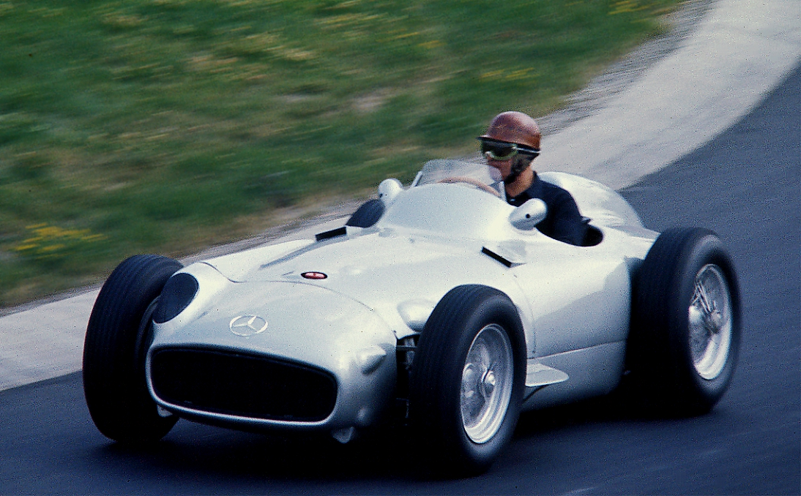
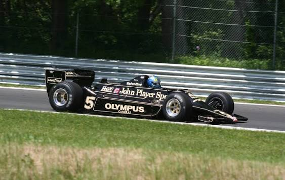
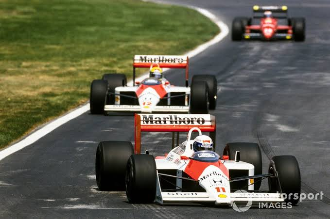
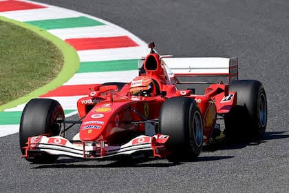
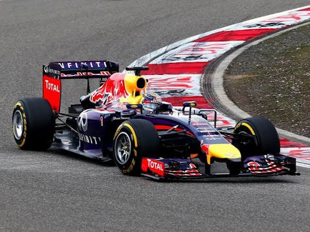

Un recorrido década por década
Desde 1950, cada período de la Fórmula 1 estuvo marcado por diferentes protagonistas, avances tecnológicos, rivalidades y transformaciones reglamentarias.
Seleccioná una década para recorrer su historia o elegí la opción Ver todas para visualizar el recorrido completo.
Mostrando todas las décadas.
Década de 1950 — El nacimiento del Campeonato Mundial
La década de 1950 marcó el nacimiento del Campeonato Mundial de Fórmula 1, inaugurado en 1950 con el Gran Premio de Gran Bretaña en Silverstone. Durante estos primeros años, la competición estuvo dominada por fabricantes europeos como Alfa Romeo, Ferrari, Maserati y Mercedes-Benz. Los monoplazas tenían motores delanteros, escasas medidas de seguridad y exigían una enorme habilidad a sus pilotos, entre los que destacó el argentino Juan Manuel Fangio.

El italiano Giuseppe Farina se convirtió en el primer campeón mundial en 1950, mientras que Juan Manuel Fangio conquistó cinco títulos entre 1951 y 1957, estableciendo un récord que permanecería vigente durante casi medio siglo. Alberto Ascari también fue una figura destacada, al conseguir dos campeonatos consecutivos con Ferrari en 1952 y 1953. En 1954, Mercedes-Benz regresó a la competición con el innovador W196, y en 1958 se introdujo el Campeonato Mundial de Constructores, ganado por Vanwall. Hacia el final de la década, los monoplazas con motor ubicado detrás del piloto comenzaron a demostrar ventajas frente a los diseños tradicionales, anticipando una transformación fundamental en la categoría.
Década de 1960 — La revolución tecnológica
La década de 1960 representó una transformación profunda en el diseño y la ingeniería de los monoplazas. Los motores ubicados detrás del piloto desplazaron definitivamente a los tradicionales motores delanteros, mientras que la aerodinámica y la reducción del peso comenzaron a adquirir mayor importancia. Escuderías británicas como Lotus, Cooper y Brabham ganaron protagonismo, impulsadas por pilotos como Jim Clark, Graham Hill y Jack Brabham.
Cooper consolidó la eficacia de los motores traseros con los campeonatos de Jack Brabham en 1959 y 1960. Posteriormente, Lotus, bajo la dirección de Colin Chapman, revolucionó la construcción de los monoplazas con el chasis monocasco del Lotus 25, utilizado por Jim Clark para conquistar el título de 1963. Clark volvió a coronarse en 1965, mientras que Brabham logró en 1966 el campeonato conduciendo un automóvil de su propia escudería. Durante los últimos años de la década aparecieron los primeros alerones destinados a generar carga aerodinámica, y comenzaron a extenderse los patrocinios comerciales sobre los vehículos. Paralelamente, los numerosos accidentes mortales evidenciaron la necesidad de mejorar la seguridad de los circuitos y los pilotos.
Década de 1970 — Rivalidades, aerodinámica y seguridad
Durante los años setenta, la Fórmula 1 experimentó una etapa de grandes rivalidades deportivas, importantes innovaciones aerodinámicas y una creciente preocupación por la seguridad. Ferrari, Lotus y McLaren fueron protagonistas de numerosos campeonatos, mientras que pilotos como Niki Lauda, James Hunt, Emerson Fittipaldi y Jackie Stewart marcaron una época. Los avances técnicos comenzaron a transformar radicalmente la apariencia y el comportamiento de los monoplazas.

La década estuvo marcada por acontecimientos como el campeonato póstumo de Jochen Rindt en 1970 y la histórica rivalidad entre Niki Lauda y James Hunt durante 1976. Ese año, Lauda sufrió un grave accidente en Nürburgring y regresó a competir pocas semanas después, aunque finalmente Hunt consiguió el campeonato. En el aspecto tecnológico, Lotus revolucionó la categoría con los modelos 78 y 79, que aprovecharon el efecto suelo para incrementar la adherencia mediante la aerodinámica de la parte inferior del vehículo. En 1977, Renault introdujo su monoplaza turboalimentado, anticipando una tecnología que dominaría los años siguientes. También fue una década decisiva para impulsar mejores barreras, circuitos e instalaciones de seguridad.
Década de 1980 — La era de los motores turbo
La década de 1980 estuvo caracterizada por la potencia de los motores turboalimentados, la creciente sofisticación tecnológica y algunas de las rivalidades más recordadas de la Fórmula 1. McLaren, Williams, Ferrari y Brabham protagonizaron una intensa competencia, mientras que Nelson Piquet, Alain Prost, Niki Lauda y Ayrton Senna se consolidaron como grandes figuras. La incorporación de nuevos materiales y sistemas electrónicos transformó el desarrollo de los automóviles.

Los motores turbo alcanzaron potencias extraordinarias, especialmente en las clasificaciones, aunque su consumo y complejidad generaban importantes desafíos técnicos. En 1981, McLaren introdujo el MP4/1, uno de los primeros monoplazas de Fórmula 1 construidos con un monocasco de fibra de carbono, material que se convertiría en fundamental para la seguridad y el rendimiento. La rivalidad entre Alain Prost y Ayrton Senna alcanzó su máxima intensidad cuando compartieron equipo en McLaren durante 1988 y 1989. En 1988, la escudería ganó 15 de las 16 carreras disputadas, con Senna como campeón mundial. Finalmente, en 1989 se prohibieron los motores turbo, dando paso a una nueva etapa de motores atmosféricos.
Década de 1990 — Nuevas leyendas y mayor seguridad
Los años noventa fueron una etapa de intensas disputas deportivas, importantes avances electrónicos y profundas transformaciones en la seguridad. Ayrton Senna, Alain Prost, Nigel Mansell y Michael Schumacher protagonizaron diferentes momentos de la década, mientras Williams, McLaren y Benetton se destacaron entre los principales equipos. La incorporación de tecnologías de asistencia a la conducción y la evolución de los diseños aerodinámicos elevaron el rendimiento de los monoplazas.
Ayrton Senna conquistó los campeonatos de 1990 y 1991, mientras que Williams consiguió importantes éxitos gracias a sus innovaciones tecnológicas, incluyendo la suspensión activa. La temporada de 1994 quedó marcada por las muertes de Roland Ratzenberger y Ayrton Senna durante el Gran Premio de San Marino, tragedias que impulsaron nuevas medidas de seguridad y modificaciones en los circuitos. Ese mismo año, Michael Schumacher obtuvo su primer título mundial con Benetton y repitió en 1995, iniciando una carrera que lo convertiría en uno de los pilotos más exitosos de la historia. Hacia el final de la década, Mika Häkkinen y McLaren dominaron los campeonatos de 1998 y 1999, consolidando una nueva rivalidad con Ferrari.
Década de 2000 — El dominio de Ferrari y Schumacher
La primera década del siglo XXI estuvo marcada por el extraordinario dominio de Ferrari y Michael Schumacher, seguido por el surgimiento de una nueva generación de campeones. La ingeniería, la aerodinámica, la electrónica y las estrategias de carrera alcanzaron niveles de complejidad cada vez mayores. Escuderías como Renault, McLaren y Brawn GP lograron disputar el liderazgo, mientras pilotos como Fernando Alonso, Kimi Räikkönen y Lewis Hamilton renovaron el panorama competitivo.

Michael Schumacher conquistó cinco campeonatos mundiales consecutivos entre 2000 y 2004, completando un total de siete títulos en su trayectoria y superando el histórico récord de Fangio. Ferrari desarrolló algunos de los monoplazas más exitosos de la categoría, especialmente el F2002 y el F2004. En 2005 y 2006, Fernando Alonso interrumpió su dominio al coronarse campeón con Renault. Posteriormente, Kimi Räikkönen consiguió el campeonato de 2007 con Ferrari y Lewis Hamilton obtuvo su primer título en 2008 con McLaren. La década concluyó con la sorprendente victoria de Jenson Button y Brawn GP en 2009, gracias a un automóvil que aprovechó innovaciones aerodinámicas como el doble difusor.
Década de 2010 — Red Bull, Mercedes y la revolución híbrida
La década de 2010 estuvo marcada por dos grandes períodos de dominio: el de Red Bull Racing con Sebastian Vettel y el de Mercedes con Lewis Hamilton y Nico Rosberg. La introducción de nuevas tecnologías híbridas transformó la Fórmula 1, otorgando mayor importancia a la eficiencia energética y a la gestión electrónica del motor. Paralelamente, se desarrollaron nuevas soluciones aerodinámicas y dispositivos destinados a mejorar la seguridad y favorecer los adelantamientos.

Sebastian Vettel y Red Bull conquistaron cuatro campeonatos consecutivos entre 2010 y 2013, gracias a monoplazas de gran eficiencia aerodinámica. En 2014 entró en vigor un importante cambio reglamentario que reemplazó los motores V8 atmosféricos por unidades de potencia V6 turbo híbridas de 1,6 litros, combinando motores de combustión y recuperación de energía. Mercedes aprovechó esta transformación para iniciar un período de dominio: Lewis Hamilton ganó cinco títulos durante la década con el equipo, mientras Nico Rosberg se coronó en 2016. También se incorporaron tecnologías como el DRS en 2011, destinado a facilitar los adelantamientos, y el Halo en 2018, una estructura de protección para la cabeza de los pilotos que representó un avance fundamental en seguridad.
Período 2020-2025 — Una nueva generación de protagonistas
Entre 2020 y 2025, la Fórmula 1 atravesó una etapa de importantes cambios deportivos, técnicos y reglamentarios. El dominio inicial de Mercedes dio paso al protagonismo de Red Bull y Max Verstappen, mientras McLaren recuperó su lugar entre las principales escuderías. La introducción de nuevos monoplazas basados en el efecto suelo, el crecimiento internacional de la categoría y la aparición de nuevos talentos marcaron un período de renovación y competencia.
La temporada 2020 estuvo condicionada por la pandemia de COVID-19, que obligó a reorganizar el calendario, mientras Lewis Hamilton alcanzó su séptimo campeonato mundial e igualó el récord de Michael Schumacher. En 2021, Max Verstappen consiguió su primer título después de una intensa y controvertida definición frente a Hamilton en Abu Dabi. A partir de 2022, un nuevo reglamento aerodinámico recuperó el protagonismo del efecto suelo, buscando facilitar que los monoplazas pudieran competir a menor distancia. Verstappen y Red Bull dominaron las temporadas siguientes, y el piloto neerlandés conquistó cuatro títulos consecutivos entre 2021 y 2024. Finalmente, McLaren ganó los campeonatos de constructores de 2024 y 2025, mientras Lando Norris se consagró campeón mundial de pilotos en 2025, cerrando el período con un nuevo protagonista en la categoría.